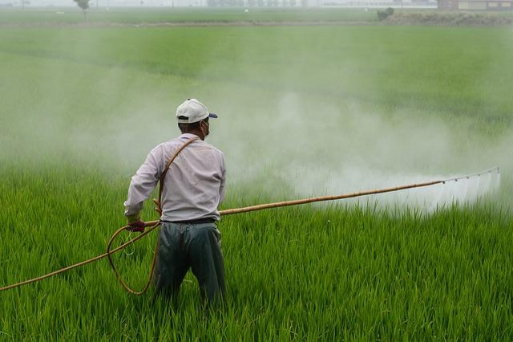

화학비료나 농약의 사용은 토양의 탄소 흡수 능력을 저하시킵니다.
생산된 농식품의 이동거리에 따라 그만큼 또 탄소가 배출됩니다.

음식물 쓰레기로 인한 CO2 배출량이 연간 약 3억톤입니다.
온실가스 31%가 먹거리에서 발생
기후위기가 현재 매우 심각한 상황임에도, 온실가스 배출이 여전히 계속 증가하고 있습니다. 그런데 FAO에 따르면 우리가 날마다 먹는 먹거리에서 전세계 온실가스의 31%가 발생한다고 합니다. 항목별로 생산이 42%, 가공, 유통, 소비 등이 35%, 토지이용이 23% 입니다. 또한 음식물 쓰레기로 인한 CO2 배출량이 연간 약 3억 톤이나 된다고 합니다. 지구를 살리기 위해 먹거리 분야에서 탄소 배출을 줄이려면 어떡해야 할까요?
흙의 기능을 강조한 '흙의 날' 제정
토양에는 대기 중에 비해 5~6배의 탄소가 저장되어 있어서, 탄소 중립을 이루기 위해서는 탄소를 흡수하고 저장하는 흙의 기능이 매우 중요합니다. 유기물과 미생물을 많이 함유한 건강한 흙이 탄소 격리 능력도 높기 때문에, 화학비료나 농약을 쓰지 않는 등의 지속적인 관리가 필요합니다. 김춘진 aT사장이 국회의원 시절이던 2013년, 흙의 가치와 보전의 중요성을 강조하기 위해 '흙의 날 제정에 관한 법률'을 대표 발의했고, 2015년 흙의 날이 법정기념일이 되었습니다.
더 알아보기
로컬푸드 지원과 ZWZH 캠페인
aT는 농식품이 먼거리를 이동하여 온실가스를 배출하는 것을 줄이기 위해 지역의 농식품을 그 지역에서 소비하도록 하는 로컬푸드를 지원해왔습니다. 로컬푸드 직매장과 직거래 장터의 개설과 운영을 돕고 전국 지자체의 로컬푸드 지수를 측정하여 우수 지자체를 시상하였습니다. 또한, WFP와 함께 Zero Waste, Zero Hunger 캠페인을 추진하여 음식을 남기지 않고 먹어서 음식물 쓰레기로 인한 탄소 배출을 줄이고 절감한 비용으로 기아에 고통받는 이들을 도왔습니다.
저탄소 식생활 캠페인 추진
흙의 가치와 관리의 필요성을 인정하고, 로컬푸드, 음식물 남기지 않기 등에 동참해서 먹거리 분야의 생산-유통-소비 전 단계에서 탄소배출을 감축할 수 있는 '코리아 그린푸드데이' 캠페인을 추진하게 되었습니다. 매월 하루, 지역에서 생산한 친환경 농산물로 만든 음식을 남기지 않고 먹는 캠페인입니다.
코리아그린푸드데이 선포식 개최
저탄소 식생활 문화를 확산하기 위해 전국민을 대상으로 생산자, 소비자, 기업 대표와 함께 '코리아 그린푸드데이' 캠페인 선포식을 개최했습니다. 이 선포식을 시작으로 지자체, 교육청, 공공기관 등과 MOU를 체결하여 범국민 캠페인으로 확산시켰으며, 앞으로는 한국을 넘어 전세계로 확산해나갈 예정입니다.
한국농수산식품유통공사 / follow us Kakaotalk facebook instagram